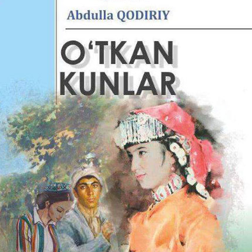
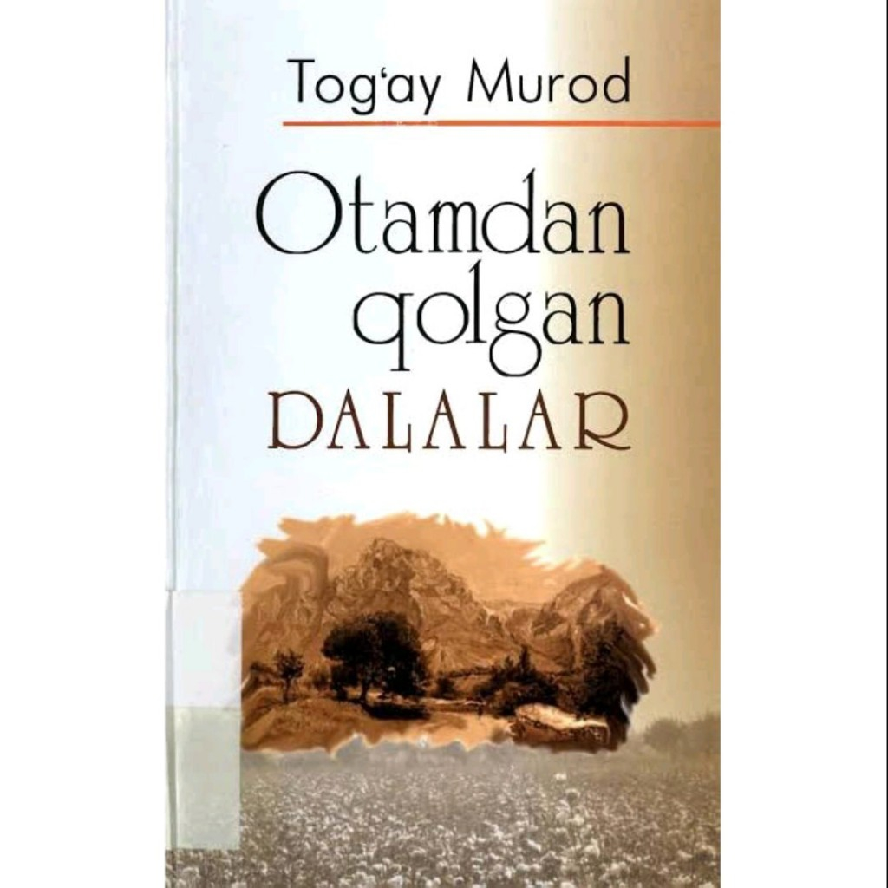
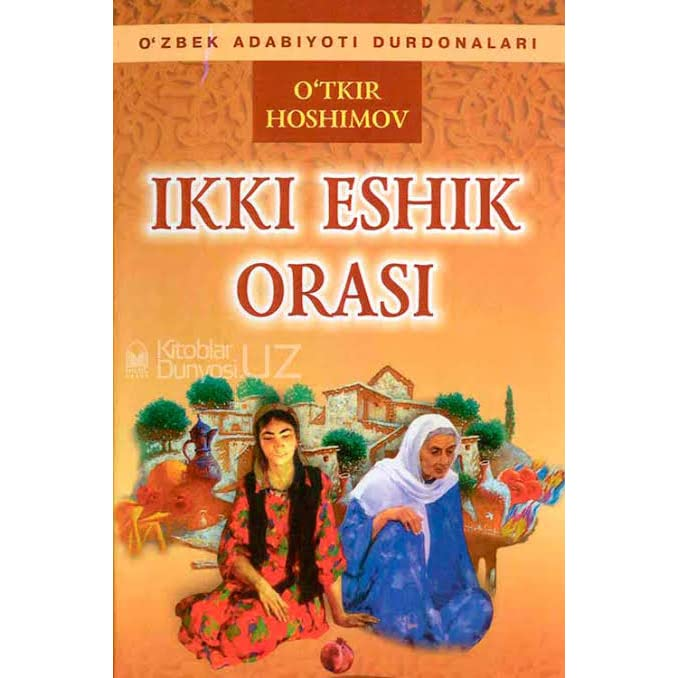
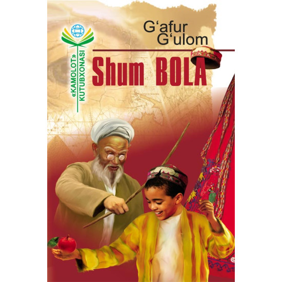

O'tkan kunlar bu roman Abdulla Qodiriy tomonidan yozilgan.
Otamdan qolgan dalalar bu roman marhum adib Tog'ay Murod qalamiga mansubdir.
Ikki eshik orasi bu sevimli adib O'tkir Hoshimov tomonidan yozilgan.
Shum bola Bu qissa adib G'ofur G'ulom tomonidan yaratilgan.
